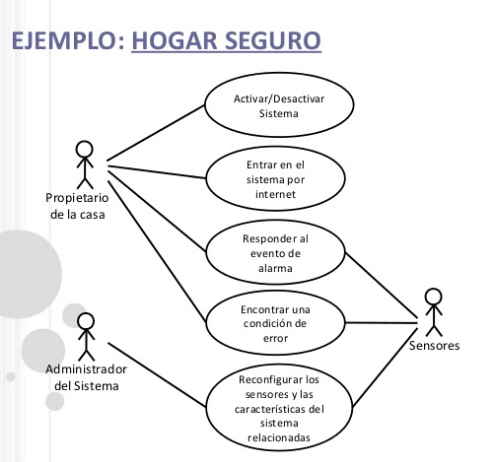
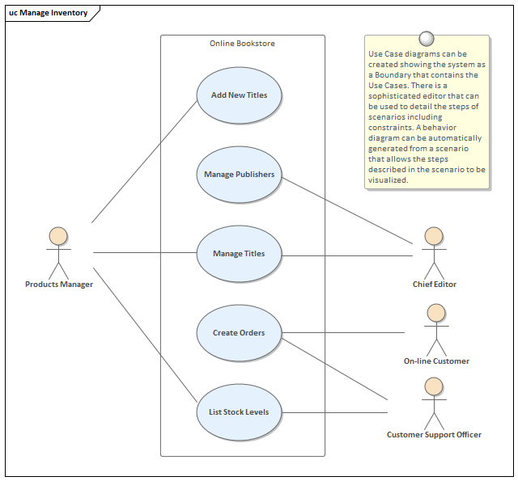
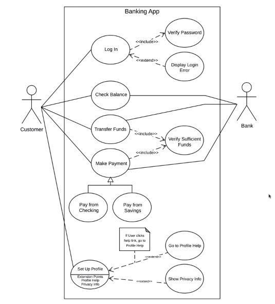
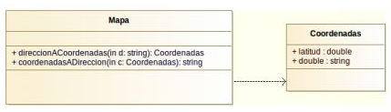
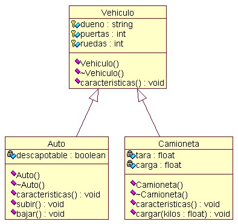
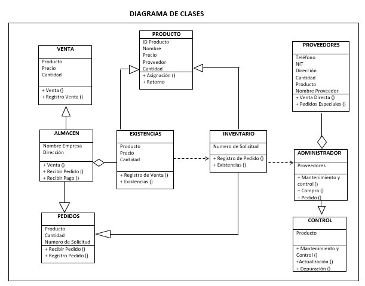
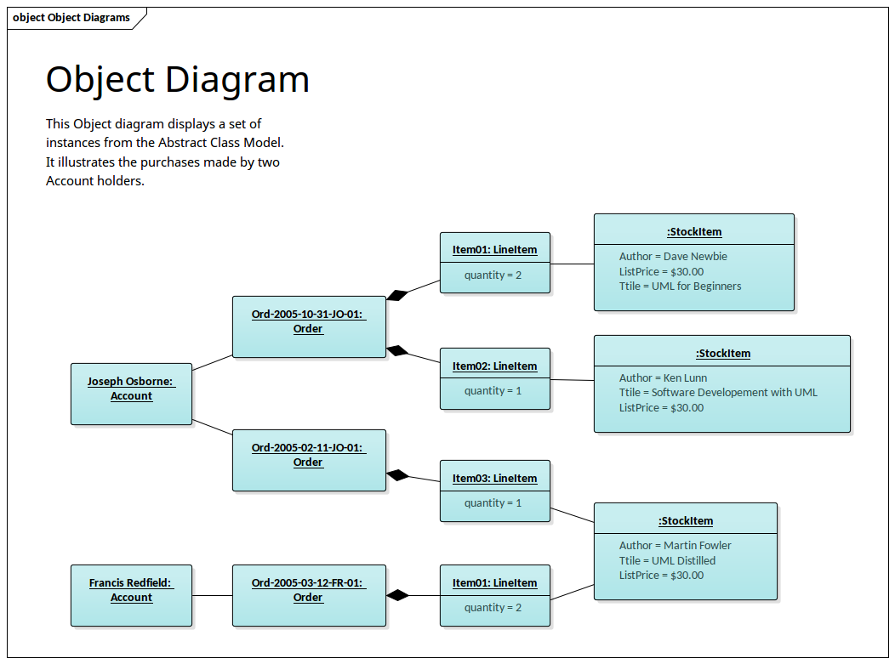

Principios que deben guiar la práctica del modelado
En la fase de modelado podemos crear dos tipos de modelos:
- Modelos de requerimientos
- Modelos de diseño
Los modelos de requisitos representan los requisitos del cliente representados en tres niveles diferentes: el dominio de la información, el dominio funcional y el dominio del comportamiento. Por otra parte, los modelos de diseño representan características del software que ayudan a construirlo de manera efectiva: la interfaz, la arquitectura y detalles a nivel de componentes.
Dependiendo del proceso de desarrollo elegido, el peso de la fase de diseño es mayor o menor. La siguiente es una lista de principios de diseño aportada por Scott Ambler y Ron Jeffries en su libro Agile Modeling sobre modelado para procesos ágiles (aunque según Roger S. Pressman son aplicables a todos los procesos de desarrollo):
- Principio 1. El objetivo principal del equipo de desarrollo es construir software, no crear modelos. Si los modelos aportan poca información sobre lo que ya se sabe sobre el software, debe evitarse.
- Principio 2. No crear modelos que no son necesarios. Los modelos deben mantenerse actualizados en base a los cambios. Cuantos más modelos se hagan, más habrá que cambiar para cada cambio.
- Principio 3. Esforzarse por producir el modelo más simple que describa el problema. Manteniendo los modelos simples, el software resultante será simple también. El resultado es software que se integra fácilmente, es fácil de probar y es más fácil de mantener. Además son más fácilmente comprensibles para el resto del equipo.
- Principio 4. Crea modelos que sean fáciles de cambiar, pero sin ser descuidado.
- Principio 5. Encuentra una razón para cada modelo. Si no existe una razón sólida para cerar ese modelo, no debe perderse tiempo en él.
- Principio 6. Adapta los modelos al sistema con que cuentas. Infórmate sobre la notación y las reglas utilizados en el tipo de sistema de interés (modelar un video juego puede necesitar un modelado diferente a un sistema de tiempo real o a un sistema embebido).
- Principio 7. Intenta construir modelos útiles, pero no modelos perfectos. Una vez reflejada la idea buscada, no tiene sentido abundar en detalles que consumirán tiempo y no aportarán gran cosa. Los modelos perfectos van en contra de los procesos ágiles.
- Principio 8. No es preciso ser dogmático sobre la representación. Si la idea es comunicada de manera eficaz, la representación es secundaria.
- Principio 9. Si tu intuición (basada en la experiencia) te dice que un modelo tiene algo malo, aunque sobre el papel quede bien, probablemente tengas razón.
- Principio 10. Busca feedbak tan pronto como puedas. Todo modelo debería ser revisado por el resto del equipo. Estas revisiones tienen como propósito corregir errores, malinterpretaciones o añadir características o elementos que se hayan omitido por error.
Para cubrir este principio, existe una tendencia a crear una lista de requisitos simple, con pocos detalles. La razón de ello es que el software cambiará, y por ello, unos requisitos definidos de esta manera, ayudará a crear un software más abierto al cambio. Pero no debe llevarnos a ser descuidados en el diseño.
Tipos de diagramas
Como ya se ha explicado, existen dos tipos de diagramas. En primer lugar están los diagramas de modelado de requerimientos. Entre este tipo de diagramas, están los siguientes
- Diagramas estructurales
- Diagramas de casos de uso
- Diagramas de clases
- Diagramas de objetos
- Diagramos de comportamiento
- Diagramas de estados
- Diagramas de actividad
- Diagramas de interacción
- Diagramas de secuencia
- Diagramas de colaboración
- Diagramas de datos
- Diagramas E/R
- Diagramas de flujo de datos
Otro tipo de diagramas, llamados de diseño, suponen un refinamiento de las diagramas de modelado de requermientos, reduciendo el nivel de abstracción (aumentando los detalles) y aproximándose más a la implementación del software. A los diagramas anteriormente expuestos, se unen otros, como los diagramas de interfaz, los diagramas de componentes y de despliegue.
UML
UML (Lenguaje de Modelado Unificado) es un lenguaje de modelado de sistemas estándar que se utiliza para modelar sistemas. Los diagramas mencionados anteriormente son parte de UML
UML y las metodologías ágiles
Hay una tendencia a pensar que en las metodologías ágiles, el modelado de requerimientos y el diseño están de más, ya que forman parte de metodologías clásicas como, como el proceso en cascada. Sin embargo, esta idea puede llevar a crear diseños y arquitecturas extrañas difíciles de mantener a la larga. En uno de sus artículos, Robert Martin se refiere a este error, indicando que el modelado y el diseño son necesarios para obtener un buen software.
Diagramas UML
A continuación analizaremos algunos diagramas UML. Para ello, seguiremos el curso enmarcado en la OCW (Open Course Ware) impartido por la Universidad de La Laguna (Tenerife).
- Introducción a UML
- Diagramas de casos de uso
- Clases y objetos
- Diagramas de comportamiento
- Diagramas de interacción
- Diagramas de implementación
Casos de uso
Algunos ejemplos de casos de uso:
  Se proponen para practicar los siguientes ejercicios:
- La máquina de café: La máquina debe permitir a una perona introducir dinero, escoger uno de los productos de acuerdo a su precio, escoger un nivel de azúcar y entregar el producto y las vueltas. El usuario puede canclar la operación en cualquier momento antes de escoger el azúzar, mediante un botón para dicho fin.
- Sistema de pago online: Queremos modelar un sistema de pago en una tienda web. El cliente debe identificarse mediante su dirección de correo. Si es un nuevo cliente se le debe registrar en el sistema previamente, pidéndole los datos personales. Una vez identificado el cliente, éste podrá elegir el medio de pago: por transferencia bancaria o con tarjeta de crédito. Según el medio de pago se le solicitarán unos datos u otros. El cliente también deberá elegir el método de envío. Finalmente se le mostrarán todos los datos del pedido para pedirle que confirme.
- Usuarios y administradores Queremos modelar un sistema en el que hay usuarios. Los usuarios pueden iniciar sesión, modificar su contraseña, recuperar su contraseña y cerrar sesión. Los administradores tienen los mismos permisos que los usuarios, pero además, pueden registrar usuarios e instalar programas.
Actividad 1. Elabora el diagrama de casos de uso para el problema del hotel.
Actividad 2. Crea un diagrama de casos de uso para el siguiente problema: Una empresa de taxi quiere supervisar todos los vehículos de los que dispone. Por ello necesita el desarrollo de una aplicación que le permita hacerlo, llamada Ubicuity.
En Ubicuity, un operador registra el GPS de los vehículos y les asigna un nombre, consistente en la matrícula del coche. El operador registra para cada coche su horario de inicio y fin cada día de la semana. De esa manera puede obtener un listado de vehículos operativos en un momento determinado. Los GPS de los coches envían cada 5 minutos su localización exacta a la aplicación. El operador puede acceder a un mapa en el que aparecen geolocalizados los taxis operativos. Cuando un cliente utiliza la aplicación, indica su posición geográfica mediante GPS. Los taxis que no llevan un cliente, reciben la notificación, y sólo uno de ellos lo seleccionará y dejará de estar disponible. El operador puede ver si un taxi lleva un cliente o no.
Diagramas de clases
Se proponen los siguientes ejercicios para practicar los diagramas de clases:
- Programa de dibujo: Se desea modelar un programa que pueda almacenar diferentes tipo de figuras geométricas: círculos, triángulos y cuadrados. Todas las figuras tienen un color, y tienen una manera particular de obtener el área.
- Empleados:Durante el desarrollo de una aplicación de gestión de personal, surge la necesidad de cubrir esta historia: "Calcular la nómina de cada trabajador, dependiendo de su tipo". Los empleados pueden ser de tres tipos. Los comisionados cobran un sueldo base, y un sueldo extra de 50€ por venta realizada. Los trabajdores por horas cobran una cierta cantidad por cada hora trabajada, multiplicada por el número de horas trabajadas. Los asalariados cobran una cantidad fija al mes.
Algunos ejemplos de diagramas de clases
  Actividad 3. Crea un diagrama de clases para el siguiente problema: se desea modelar una tienda online. La tienda almacena información sobre sus clientes. Un cliente tiene un nombre de usuario, una dirección, un teléfono y un email. Todos los clientes tienen asociada una cuenta en la que está la dirección de facturación, la fecha de creación y la fecha de cancelación, en caso de estar cancelada. Cada cliente tiene una cesta de la compra, que puede incluir uno o más productos. Cada producto de la cesta queda descrito por su nombre y su precio. Cuando un cliente procede con una compra, debe decidir ciertas cuestiones sobre la orden de compra, como la dirección de envío. Además, el cliente es informado sobre la cuantía de los portes y la fecha aproximada de entrega.
Actividad 4. En una empresa queremos guardar información de sus empleados y de los clientes con los siguientes requisitos:
- De los empleados queremos guardar un sueldo bruto.
- De los clientes queremos guardar su teléfono.
- Los clientes y los empleados tiene las siguientes características comunes: la edad y el nombre
- Los directivos son un tipo de empleado. De ellos queremos conocer su categoría.
- Queremos una función que permita imprimir por pantalla todos los datos de cada persona.
Además existe una flota de coches de empresa a disposición de los directivos. Cada coche puede estar asignado a un único directivo y viceversa. De los vehículos necesitamos saber su matrícula y su kilometraje.
Crea un diagrama de clases que describa el problema.
Diagramas de objetos
Actividad 5. Representa mediante un diagrama de objetos, un instante del problema de la tienda online en el que un cliente está a punto de completar la compra de varios productos.
Diagrama de estados
Cómo crear un diagrama de estados
- Identificar las entidades que tienen un comportamiento complejo o bien clases cuyo ciclo de vida debe ser especificado.
- Determinar los estados inicial y final de una entidad.
- Modelar las transiciones.
- Identificar los eventos que afectan a la entidad.
- Partiendo del estado inicial, determinar el efecto de los eventos e identificar los estados.
- Identificar cualquier entrada y salida de los estados.
- Detallar si es necesario los estados usando subestados.
- Si la entidad es una clase, comprobar que la acción en el estado está recogida por las operaciones o las relaciones de la clase. Si no es así, ampliar la clase para que así sea.
- Refinar y elaborar según sea necesario.
Ejemplo para practicar: Un servicio de reparto de comida a domicilio, emplea una aplicación para recibir los encargos y para realizar las entregas.
- Cuando el servicio recibe un pedido, se mentiene en espera hasta alcanzar un mínimo de tres encargos. Si pasan más de 30 minutos desde el primer encargo, se inicia la entrega aunque no se haya llegado al mínimo (3).
- Durante la entrega, la aplicación calcula el siguiente destino más cercano. El repartidor se dirige a dicho destino.
- Al entregar el encargo, el repartidor abre un proces de entrega, que cierra el cliente dando un feedback para confirmar la recepción. La aplicación envía entonces la ubicación actual del repartidor.
- El proceso de entrega continúa hasta que no quedan más encargos.
- Una vez finalizada la entrega, el repartidor vuelve al punto de salida y confirma su llegada en la aplicación.
Actividad 6. Representa mediante un diagrama de estados el proceso de reserva de una habitación de hotel:
Se trata de modelar los estados por los que pasa un sistema de reserva hasta que la habitación es finalmente reservada, o bien es denegada. Define textualmente los pasos que incluyen una reserva, y después refléjalos mediante un diagrama de estados. Ten en cuenta que lo que la descripción dada por el cliente es la siguiente:
Para que se pueda reservar una habitación necesitamos los datos del cliente, que incluyen el nombre, un correo electrónico, un teléfono de contacto y un documento de identificación, que puede ser el DNI u otro documento válido en el país de origen. Cuando se reserva la habitación, hay que abonar como mínimo la mitad del precio de la habitación, que se perderá 24 horas antes de la fecha de la reserva, salvo que se pague el precio completo. Una habitación reservada, no se puede volver a reservar en la misma fecha, hasta que la reserva se cancele o bien hasta que termine la ocupación. Aunque un cliente no se presente en la fecha de la reserva, la habitación seguirá considerándose ocupada (siempre que el cliente haya abonado el precio completo de la habitación). Si se cancela una reserva antes de 24 horas de la fecha de ocupación, el cliente perderá la mitad del precio total.
Diagrama de actividades
Un diagrama de actividades se puede usar para:
- Definir la lógica de un algoritmo
- Describir orden de tareas en casos de uso
- Detallar el flujo de trabajo entre usuarios
- Comprender procesos de cierta complejidad
Los pasos para definir un diagrama de actividad son
- Definir particiones.
- Establecer los elementos inicial y final.
- Determinar las actividades implicadas
- Determinar los objetos implicados
- Añadir pines de entrada/salida a las actividades para conectarlas con los objetos.
- Conectar las actividades entre sí y los objetos.
- Representar la concurrencia insertando fork/join.
Ejemplo para practicar: modela el siguiente proceso relacionado con la resolución de una incidencia
Cuando un usuario sufre un problema técnico, genera una ticket describiendo la incidencia.
Un helpdesk recibe la notificación, y si puede resolver la incidencia directamente, lo hace y marca el ticket como resuelto. En caso contrario, asigna el ticket a un técnico.
El técnico resuelve la incidencia en cuanto le es posible, y marca el ticket indicando que la incidencia ha sido resuelta.
El usuario revisa el ticket pudiendo dar por resuelta o no la incidencia. En caso de darla por resuelta, el helpdesk cierra la incidencia y proceso de resolución concluye. En caso contrario, el proceso vuelve a comenzar hasta que quede resuelta.
Actividad 7. Modela mediante un diagrama de actividades el siguiente problema:
Cuando se abre un proyecto con el software InfinityPolitechnics, la aplicación comprueba si el documento de configuración del proyecto pertenece a una versión igual o superior a la versión 4.0. Si es así, se procede con la apertura del documento. En caso contrario se muestra un diálogo de pregunta con el siguiente mensaje: Este proyecto debe ser traducido a la versión 4.0. ¿Desea proceder con la traducción? Si la opción elegida es "No", se muestra un mensaje indicado lo siguiente: "Lo siento, no se puede abrir este proyecto". En caso de indicar "Sí", se ofrece la posibilidad de realizar una copia de seguridad, con las opciones "Aceptar" y "Cancelar". Si se elige "Sí", se realiza una copia de seguridad. Después se prosigue con el proceso de traducción. Si la traducción es exitosa, se muestra un mensaje con el resultado, y se abre el proyecto. En caso contrario, se genera un log, y se muestra un mensaje indicando que no se ha podido abrir el proyecto
Ejemplo 1. Establecimientos más cercanos.
- Obtener los establecimientos más cercanos que sirven un plato. Recuerda el enunciado del examen: "Obtener los establecimientos más cercanos a la ubicación actual que sirve un cierto plato". Para conseguirlo, debemos seguir los siguientes pasos:
- Obtener la ciudad donde se sirve el plato pedido
- Obtener los establecimientos de dicha ciudad donde se sirve un cierto plato
- Repetir para cada establecimiento:
- Obtener las coordenadas del establecimiento
- Pasar las coordenadas a un objeto Coordenadas, calcular la distancia
- Devolver el establecimiento más cercano.
Ejemplo 2. Realizar un pedido.
- Describir el diagrama de secuencia del siguiente caso de uso: "Realizar un pedido". El proceso es como sigue:
- Un cliente accede a la interfaz del sistema para realizar un pedido.
- La interfaz del sistema reenvía la solicitud al controlador de pedidos, que solicita una lista de productos al almacén. Después devuelve dicha lista de productos a la interfaz.
- El cliente selecciona el producto en el que tiene interés.
- La interfaz solicita información del producto al almacén.
- El almacén devuelve los datos del producto solicitado
- La interfaz muestra los datos del producto.
- La interfaz muestra la información del producto al cliente.
- El cliente confirma su selección en la interfaz
- La interfaz envía la confirmación al controlador del pedido. Éste genera un pedido, y devuelve la ID del mismo a la interfaz.
Actividad 8. Un diagrama de secuencia describe (con mayor o menor nivel de detalle) un caso de uso (funcionalidad o historia de usuario). Supongamos el problema de la cafetería:
Se desea crear un programa para administrar una cafetería, en la que tengamos unas mesas establecidas y a estas les podamos agregar productos, que tendrán nombre y precio. Podremos abrir mesas, para añadirles productos, y cerrarlas, es decir cobrándolas. Tendremos un recuento de caja donde se guarda todo el dinero que se han recaudado de las mesas. Las mesas estarán cerradas por defecto.
- Consultar mesas abiertas.
- Consultar mesas cerradas.
- Consultar el recuento de caja actual.
- Añadir productos a la lista de productos(Crear nuevo producto).
- Añadir producto a una mesa.
- Cerrar mesa (Cobrarla).
Dado el problema anterior, supon que el diagrama de clases obtenido es el siguiente.

Dibuja los diagramas de secuencia de los casos de uso 3. y 5.
Ejercicio de repaso de UML
Se desea desarrollar una aplicación para organizar competiciones mediante eliminatorias. La descripción del problema es el siguiente:
Los equipos pasarán por diferentes fases eliminatorias, empezando por una fase de grupos. En esta primera fase, los equipos se organizan por grupos formados por varios equipos. Los equipos de cada grupo se enfrentarán por rondas, de forma que todos se enfrentarán con todos. El equipo que gane más competiciones de cada grupo pasará a la siguiente fase.
A partir de esta fase, todas las fases se desarrollan de igual manera. En cada fase, los equipos se enfrentarán por parejas, y sólo los ganadores pasarán a la siguiente.
Se debe asignar un lugar a cada enfrentamiento, de forma que dos enfrentamientos no pueden ocurrir a la vez en el mismo sitio.
Las cosas que un usuario puede hacer en la aplicación son las siguientes:
- Introducir un equipo: los equipos serán introducidos por el usuario. También pueden ser editados o eliminados.
- Introducir un lugar de enfrentamientos: los lugares serán definidos por el usuario. Se puede además indicar qué lugares están disponibles para una determinada fase.
- Introducir el tamaño de los grupos y el número de ganadores de cada grupo en la fase de grupos.
- Abrir la siguiente fase: Abrir la siguiente fase varía dependiendo de si se trata de la primera fase (fase de grupos) o del resto. Cuando la fase de grupos se abre, se procede a realizar el sorteo de grupos, asignando los equipos a un grupo. También se calcula el número de rondas necesarias. En el resto de fases, se seleccionan los equipos ganadores de la fase anterior.
- Sortear los enfrentamientos: en el sorteo de enfrentamientos, se planifica qué equipos se enfrentarán con cuáles, y dónde lo harán. En la fase de grupos, los enfrentamientos se organizan por rondas, de forma que cada grupo de cada grupo se enfrente con todos los demás.
- Designar un ganador: para cada enfrentamiento organizado de la fase actual se puede definir un ganador. No se puede definir un ganador sin haber realizado el sorteo de enfrentamientos.
- Cerrar una fase: Cuando una fase se cierra, se pasa a la siguiente. No es posible cerrar una fase cuando no hay un ganador definido en cada enfrentamiento.
Realiza los siguientes diagramas:
- Diagrama casos de uso.
- Diagrama de clases.
- Diagrama de estado de una fase eliminatoria (no de grupos).
- Diagrama de actividades de la organización de los grupos en la fase de grupos.
- Diagrama de secuencia del sorteo de un enfrentamiento.
Un sistema requiere gestionar la información relativa a los proyectos de una empresa. Cada uno de los proyectos incluye información variada:
- Nombre del proyecto
- Project Manager
- Equipo
- Recursos
- Servidores
- Documentos
- Repositorios
- Lista de tareas pendientes
- Lista de tareas completadas
Las características de los elementos enumerados son:
- El Proyect Manager es una persona que tiene nombre y apellidos.
- Los equipos están formados por personas con nombre, apellidos y función, que puede ser “developer” o “sysadmin”.
- Los servidores incluyen información sobre el servidor, a saber, FQDN, ip y puerto. Un servidor puede tener una IP, pero puede tener más de un FQDN y un puerto.
- Documentos son documentos de texto plano.
- De los repositorios nos interesa saber el nombre del repositorio y su URL.
- La lista de tareas pendientes y de tareas completadas incluyen tareas. Una tarea tiene una descripción, una duración esperada y una lista de personas del equipo responsables. También tiene una duración efectiva, que es el tiempo dedicado hasta el momento a la tarea.
El propietario de la aplicación desea cubrir las siguientes historias de usuario:
- Crear un nuevo proyecto, donde se puedan añadir las personas y los recursos.
- Modificar cualquier dato de un proyecto.
- Añadir nuevas tareas y asignárselas a las personas indicadas.
- Marcar una tarea como completada una vez que ha terminado.
- Obtener los proyectos en los que hay tareas completadas en las que la duración efectiva supera la deseada.
- Obtener los proyectos en los que el total de horas efectivas completadas supera al total de horas esperadas.
- Cerrar un proyecto. Cuando se define un nuevo proyecto, se considera en espera hasta que se dan las condiciones para poder iniciarlo. Hasta que todas las tareas de un proyecto han sido completadas, no se puede cerrar. Una vez que un proyecto ha sido cerrado, no se pueden añadir tareas, pero puede reabrirse si aparecen nuevas. Cuando un proyecto cerrado ya no recibirá más modificaciones, se considera definitivamente finalizado.
- Obtener el diagrama de casos de uso.
- Obtener el diagrama de clases.
- Obtener el diagrama de estados de la historia “Cerrar un proyecto”
- Obtener el diagrama de actividad del siguiente enunciado:
- Obtener el diagrama de secuencia de la historia “Obtener los proyectos en los que hay tareas completadas en las que la duración efectiva supera la deseada”
Al declarar un servidor se comprueba si ya está definida la IP en otro servidor ya declarado. En caso de existir, se añaden los nuevos FQDN y puerto a la lista de FQDN y puertos del mismo. En caso contrario, se crea un nuevo servidor con la información proporcionada.